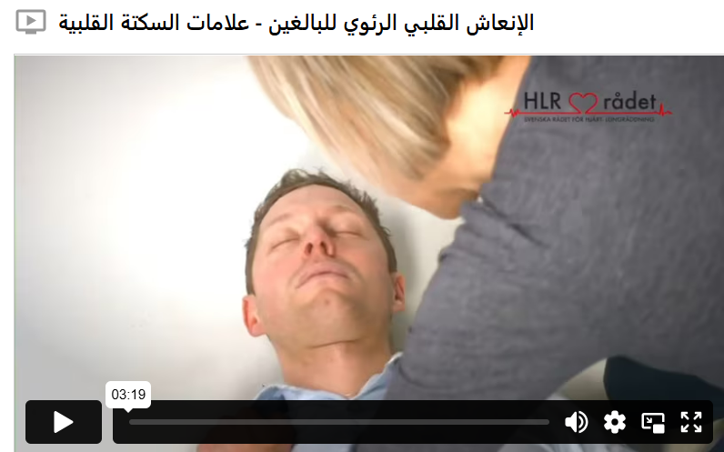
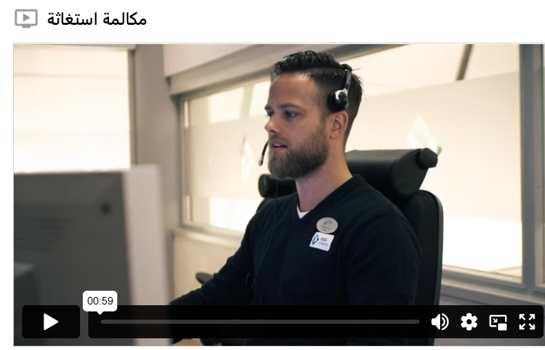

عناصر التحكم والإنذارات
التحكم في العقل
إذا وجدت شخصًا يبدو بلا حياة، يجب عليك التحقق مما إذا كان واعيًا. تحدث مع المصاب واسأله عن حاله، وفي نفس الوقت هزّه بلطف من كتفيه. إذا لم يستجب الشخص، فهو فاقد للوعي. تحقق من التنفس، وافتح مجرى الهواء بوضع إصبعين تحت طرف الذقن ويد على الجبهة، ثم ارفع الذقن وارجع الرأس إلى الخلف. انظر واستمع وتحسس ما إذا كان الشخص يتنفس بشكل طبيعي. إذا كان يتنفس بشكل طبيعي، ضعه في وضعية الاستلقاء الجانبي الآمن. التنفس غير الطبيعي قد يكون علامة على توقف القلب. إذا كان الشخص لا يتنفس أو يتنفس بشكل غير طبيعي، اتصل فورًا بالرقم 112 وابدأ الإنعاش القلبي الرئوي فورًا.
اتصل على
إذا كان شخص بالغ أو مراهق فاقدًا للوعي، أو لا يتنفس أو يتنفس بشكل غير طبيعي، يجب عليك الاتصال برقم 112 ثم بدء الإنعاش القلبي الرئوي. إذا كان الطفل فاقدًا للوعي، يجب أولاً أن تقوم بخمس نفخات إنقاذ، ثم إجراء الإنعاش القلبي الرئوي باستخدام 30 ضغطة صدرية يتبعها نفختان، وذلك لمدة دقيقة واحدة قبل الاتصال برقم 112. فعّل مكبر الصوت حتى تتمكن من مساعدة الشخص بسهولة أثناء تلقي التعليمات من عامل الطوارئ. لا تُنهِ المكالمة أبدًا إلا إذا طلب منك عامل الطوارئ ذلك.
القاعدة العامة: إذا كنت فاقدًا للوعي ولا تتنفس أو تتنفس بشكل غير طبيعي، فاتصل بالرقم 112 وابدأ في إجراء الإنعاش القلبي الرئوي.